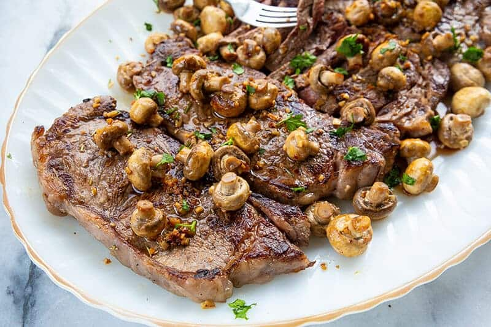

New York Strip Steak with Fried Garlic Mushrooms

A classic American dish that is easier to make than you may think
New York strip is a delicious steak cut to serve with any side dish and pairs great with red wine! This New York strip steak with fried garlic mushrooms recipe is gluten-free, keto-friendly, paleo, and low-carb. Not everyone is a mushroom fan, but this is a great option to try something different in the kitchen.
Cooking steak can be intimidating if you’re not used to it. Is it too dry? Not dry enough? Overcooked? Under-cooked? Everyone has a preference, and it can be hard to get it just right, but once you get the hang of it, cooking a steak isn’t that tough at all
Ingredients
New york Stip Steaks
- 8oz New York strip steaks
- 1 teaspoons minced garlic per steak
- 1 pinch of rosemary per steak
- 2 tablespoon fresh lemon juice
- 1/4 cup olive oil
- black pepper
- salt
- 3/4 teaspoon flaked sea salt
Fried Garlic Mushrooms
- 1 pound small button mushrooms
- 2 tablespoons salted butter
- 1-2 tablespoons minced garlic
Instructions
New York Strip Steak
- Place the lemon juice and the olive oil in a shallow container large enough to hold the steaks in a single layer.
- Place the steaks into the oil, then turn to coat both sides in the oil and lemon juice mixture. Salt and pepper if desired.
- Rub the minced garlic over the steaks, then sprinkle the rosemary all over the steaks as well. ( I like a lot of rosemary, so how much is up to you!)
- Let the steaks stand at room temperature in the container for 30 minutes.
- To cook the steak, remove the steaks from the marinade and place on a clean plate, making sure to discard the marinade.
- Heat your BBQ or grill to high temp, oiling the grill or grates on your barbecue if they tend to stick - you don't want these to stick!
- Place the steaks on the grill and cook the steaks until a meat thermometer inserted in thickest portion registers your desired degree of doneness, See my notes in the post above for the beef cooking temperatures and doneness.
- Place the streaks onto a cutting board and then tent the steaks loosely with foil. Let stand 5 minutes. Remove the foil and cut steaks across the grain into slices.
- Arrange the steak slices on a platter.
Fried Garlic Mushrooms
- To prepare the mushrooms, start them 10 minutes before you start the steak. I then leave them with the lid on to stay warm while the steak finishes.
- Place the butter in a large skillet on medium-high heat. Add in the mushrooms and fry for 10-15 minutes, or until they have reduced in size and released most of their water content.
- Add in the garlic when the mushrooms are done and fry for 2-3 minutes. To keep warm, simply cover and keep on the burner ( turn the burner off and let the residual heat keep them warm,)